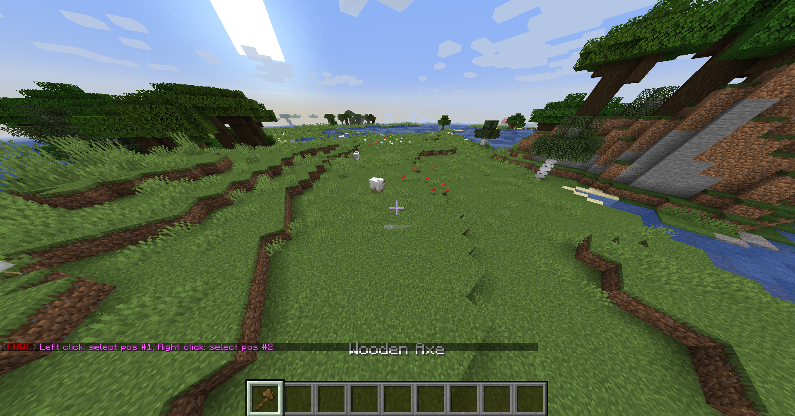

How to install and use Fast Async World Edit (FAWE)¶
WARNING¶
FAWE can cause world corruption - Use at your own risk.
How it happens¶
FAWE asyncs tasks that shouldn't be async, then it skips other parts of the process to speed it up. FAWE gets it's speed from skipping important tasks needed for a stable experience. Because FAWE skipped important tasks it broke on Starlight (Tuinity's lighting engine).
Starlight had to remove lots of it's optimizations because people using FAWE were complaining about it not working.
Paper even considered blacklisting the plugin from even loading at one point, since many of the bugs reported to Paper were caused by FAWE corruptions. They decided it was best not to intervene and just let people break their stuff. At least then they couldn't be labelled the bad guys and could finger point at FAWE.
There is a reason WorldEdit hasn't made anything "async". FAWE is known to corrupt worlds. We strongly recommend using the regular WorldEdit and just limiting your tasks to what can be handled which is already quite large because of WorldEdit's recent major optimizations.
What is FAWE?¶
WorldEdit is a plugin for building structures more quickly. For example, building a sphere, pyramid, or filling a cuboid. FAWE is a fork of WorldEdit and which has huge speed and memory improvements and considerably more features
Prerequisites¶
Warning: FAWE needs Nashorn which was removed in Java 15 for some features. FAWE recommends using version 11.
You need a server running which can handle Spigot plugins (for example Spigot, Paper or Purpur; look here for a further description of the servers)
The first thing to do is to download FAWE. Go to the Spigot Page and click on Download Now
Now you should be on FAWE's Jenkins site. Click on the JAR under Last successful artifacts and it should be downloaded.
Note: There's also a direct link to the last stable build
Installation¶
Move (or copy) the downloaded JAR into the plugins directory in your server directory (where the Server JAR is)
Now restart your server (do /restart or do /stop and start it again).
Note: You can also do /reload but that is not recommended and can cause bugs and memory leak
You should see something like this in your server logs:
[15:04:57 INFO]: [FastAsyncWorldEdit] Enabling FastAsyncWorldEdit v1.16-581;dd65cff
[15:04:57 INFO]: WEPIF: Using the Bukkit Permissions API.
[15:04:58 INFO]: Using com.sk89q.worldedit.bukkit.adapter.impl.FAWE_Spigot_v1_16_R3 as the Bukkit adapter
[15:04:58 INFO]: Registering commands with com.sk89q.worldedit.bukkit.BukkitServerInterface
Using FAWE¶
Getting Started¶
To do stuff with FAWE you need the so-called wand. Normally, that's a wooden axe, so just grab one out of your inventory or do //wand. FAWE's commands always start with two slashes and not just one and FAWE often needs two positions for stuff, for example, for filling a cuboid, it needs two of the corners.

Filling an cuboid¶
Select the two corners by leftclicking on one corner block and rightclicking on another corner block


Note: The 1440 means that 1440 blocks are selected.
Now you fill it, for example, with stone so do //set stone

Undoing¶
If you did something wrong, don't worry, just do //undo

Further commands¶
For a command list do //help or go here